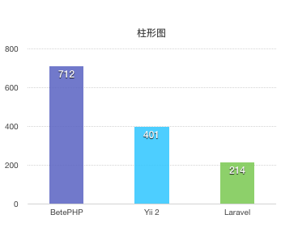

BetePHP
BetePHP是一个易于学习使用的高性能PHP框架。我们坚信好的框架应该是简单、易用、且性能高的，我们深知这个过程中需要做一些取舍，因此我们保留一个框架本身最基本、最常用的功能，其他功能则留给用户去扩展。
为什么需要另一个框架？
市面上已经有很多框架，为什么我们还需要另外一个框架？Laravel、Yii 2、Symfony等都是非常优秀的框架，通过composer引入开源库，使用框架进行封装后提供丰富的功能组件；但是其中的问题也在这，通常引入使用一个库都需要加载十几个文件，可能还有二次依赖，加载的文件更多，这其中加载文件的IO成本就比较高了，这也是为什么有些框架空转耗时较高的原因。而BetePHP框架不依赖其他库，框架本身仅有不到80个文件，使用一套标准的风格实现其API，一方面大大降低了文件require的成本，同时统一的API风格让开发者易于学习使用。
根据二八法则，80%的情况只使用了20%的功能，BetePHP的目标则是专注于这20%的功能，其他的情况则通过框架提供的扩展来完成。BetePHP本身没有包含事件、用户认证、模版引擎等特性，开发者可以根据需要自行扩展。
为什么没有Controller？
通常一个MVC应用，请求输入处理，调用Model逻辑，都会放到Controller的action中，随着时间的推移，包含多个action的Controller就会变的越来越大，因此我们将Controller的action分离成单个的Action，每一个接口对应着一个Action，这样省去加载Controller无关action的时间。
性能对比
同一台服务器各框架QPS对比（越高越好）：

文件数量
每个框架安装完成时文件数量与项目大小对比
| 框架名 | 文件数量 | 项目大小 |
|---|---|---|
| BetePHP | 130 | <1M |
| Yii2 | 5500 | >50M |
| Laravel | 7900 | >50M |
基础功能
| 框架名 | 路由 | 中间件 | 数据校验 | ORM | 日志 |
|---|---|---|---|---|---|
| BetePHP | ✓ | ✓ | ✓ | ✓ | ✓ |
| Yii2 | ✓ | ✓ | ✓ | ✓ | ✓ |
| Laravel | ✓ | ✓ | ✓ | ✓ | ✓ |